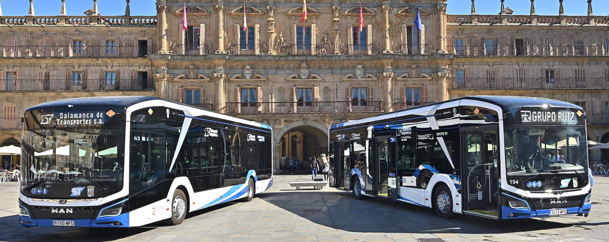
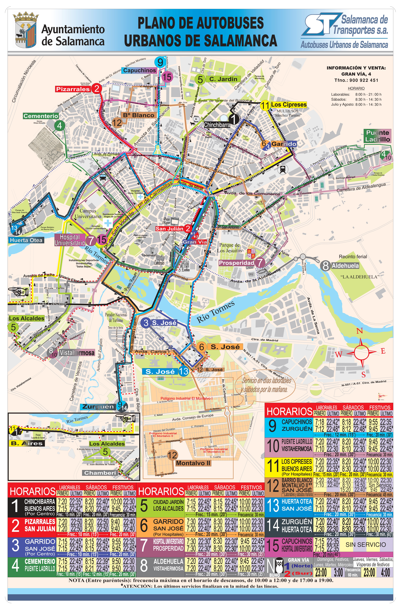

Guía del Autobús Urbano en Salamanca

La red de autobuses urbanos de Salamanca, gestionada por Salamanca de Transportes, es la columna vertebral de la movilidad en la ciudad. Conecta de manera eficiente todos los barrios periféricos, el centro histórico y los diferentes campus universitarios, ofreciendo una amplia variedad de tarifas y abonos adaptados a las necesidades económicas de cada usuario, desde estudiantes hasta familias numerosas.
Tarifas y Tipos de Billetes
Billetes y Bonos Ordinarios
- Billete ordinario normal: Viaja en cualquier línea, a cualquier hora y día. Se adquiere en el bus. Precio: 1,20 €.
- Tarjeta bono-bus ordinario: Solicita la tarjeta anónima por 2 €. Recarga tu monedero con 5, 10 ó 20 €. Con cada viaje unitario se descontará 0,37 €. El primer trasbordo a otra línea es gratis antes de 45 minutos.
Abonos Mensuales (Viajes Ilimitados)
- Tarjeta bus-ciudad (Abono general): Tarjeta personalizada (2 €). Permite viajes ilimitados. Precios: 1 mes: 13,88 € – 3 meses: 41,25 € – 6 meses: 81,87 € – 12 meses: 160,59 €.
- Tarjeta bus-ciudad (Abono mensual joven): Para menores de 30 años empadronados. Tarjeta personalizada (2 €). Viajes ilimitados desde el día de la recarga. Precios: 1 mes 7,34 € – 3 meses: 21,52 € – 6 meses: 41,98 € – 12 meses: 81,34 €.
Bonificaciones Especiales (Según IPREM)
- Tarjeta bono-bus reducido: Para personas empadronadas que cumplan los baremos del IPREM (ej. 2 personas sin superar 3,5 veces el IPREM). Coste de la tarjeta: 2 €. Viaje unitario: 0,19 € (trasbordo gratis antes de 45 min).
- Tarjeta bono-bus especial: Para rentas más bajas (ej. 2 personas sin superar 2,5 veces el IPREM). Coste de la tarjeta: 2 €. Viaje unitario: 0,01 € (trasbordo gratis antes de 45 min).
Mapa de Líneas de Autobús
Consulta a continuación el plano oficial con todas las rutas y paradas de la red de autobuses urbanos de Salamanca para planificar tu trayecto.
